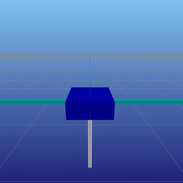

ALTRO: A Fast Solver for Constrained Trajectory Optimization
In this work, we develop and implement a fast algorithm for constrained trajectory optimization that utilizes iterative-LQR to exploit problem structure within an augmented-Lagrangian framework to handle constraints. I am co-lead author on this paper and did algorithm design, devised examples, and co-developed the initial versions of the related open-source package, TrajectoryOptimization.jl.